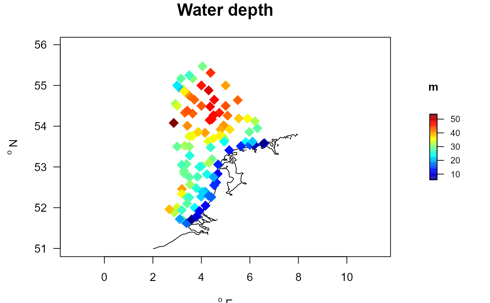
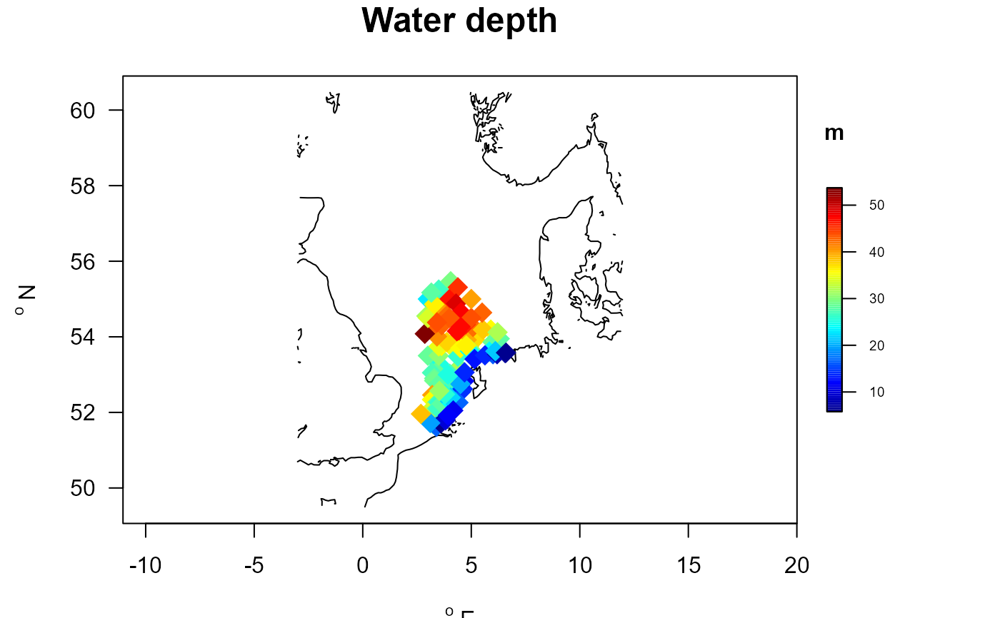
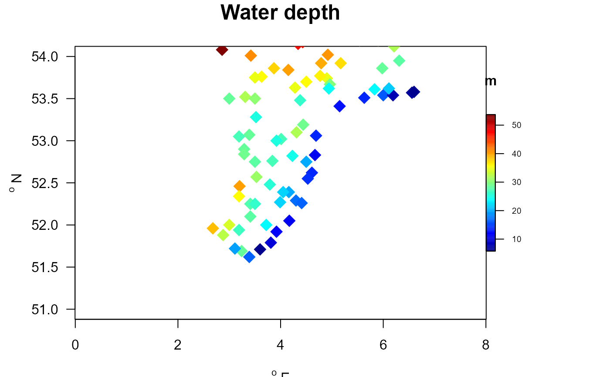
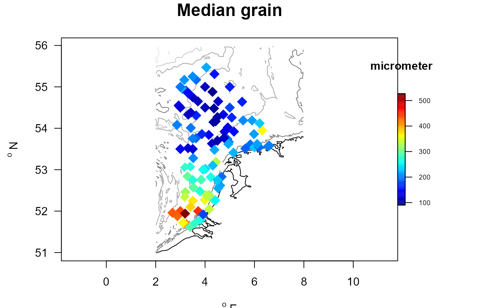
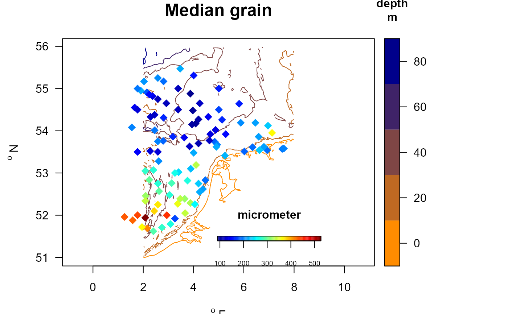
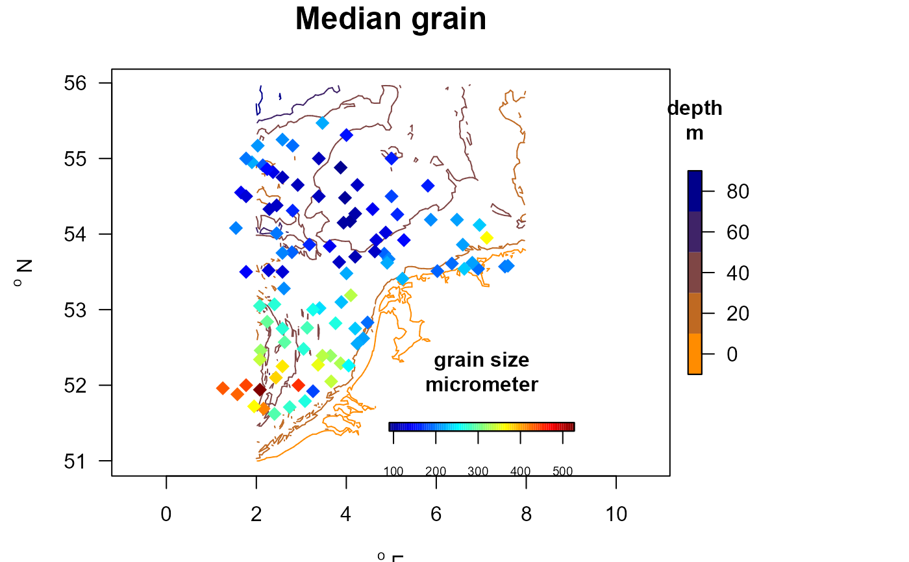
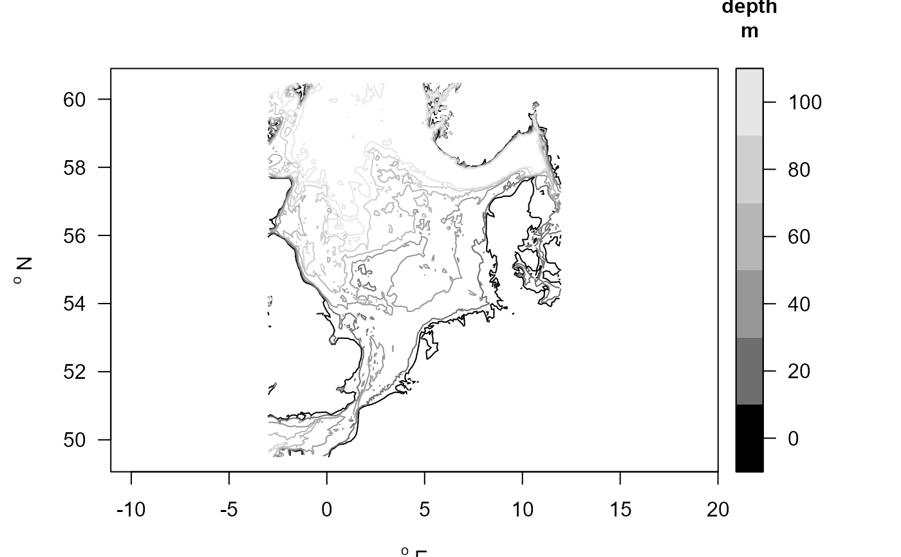
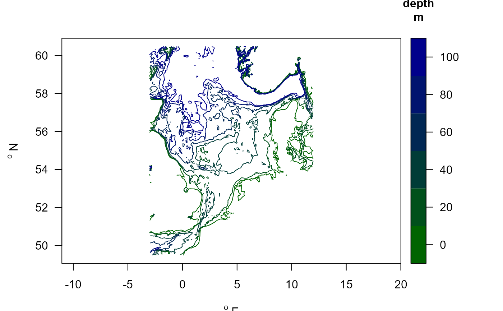
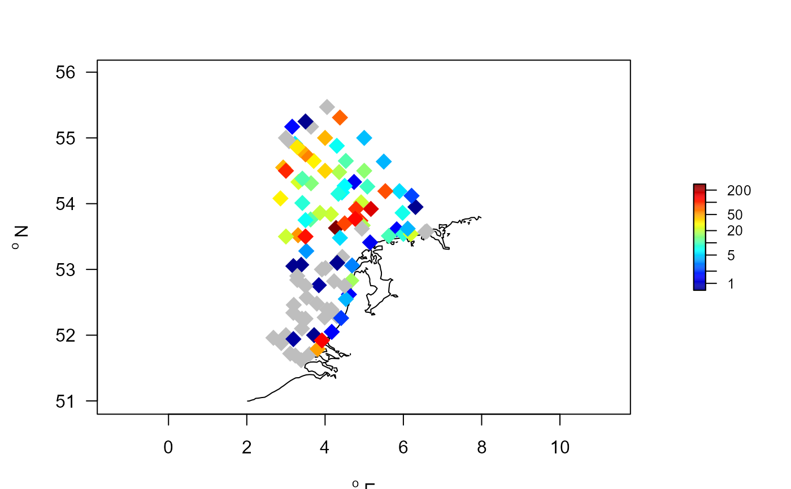

Simple plotting function for trait or density data
BtraitMap.RdmapBtrait: plots contourlines of the dataset with data superimposed
Usage
mapBtrait (x = NULL, y = NULL, colvar = NULL, main = NULL, col = NULL,
colkey = list(length = 0.3, width = 0.5, cex.axis = 0.8,
cex.clab = par("cex.lab")), xlim = NULL, ylim = NULL,
contours = NULL, draw.levels = FALSE, col.levels = NULL,
key.levels = FALSE, lwd.levels = 1, axes = TRUE, frame.plot = TRUE, ...)Arguments
- x, y
coordinates of the points to plot.
- colvar
color variable.
- col
The colors used for the color variable. A vector; the default is
jet.col(100).- colkey
specifications for the color key. See colkey. The color key will only be drawn if
draw.levels = TRUE.- main
title of the plot.
- xlim, ylim
(approximate) ranges of the plot. This is only approximate, as the actual ranges are tuned by the aspect ratio, which is calculated in the function.
- contours
A list with
x,y, andzthat specifies the contours. Usually,zis the water depth. If NULL, the contour specification from datasetMWTLis used (MWTL$contours)- draw.levels
Whether or not the depth levels should be added; if
FALSEonly levels that are >= 0 will be added.- col.levels
Colors of the depth levels (only applicable if
draw.levels=TRUE); the default is to have grey colors. Also allowed is a function that takes as input the number of colors - see last example.- lwd.levels
The line width of the depth lines.
- key.levels
Whether to add a color key with the depth levels; only applicable if
draw.levels=TRUE). This can be TRUE or FALSE, or a list that specifies the color key (see colkey).- axes, frame.plot
arguments to the main plotting function (that opens a window)
- ...
additional arguments passed to the plot function points2D, e.g. the type of symbol to use (pch, cex, ...), or whether to use log-transformed color variables (log="c").
Note
This is a quick-and-dirty plotting function, and there may be better alternatives around.
To scale the x- and y-axis, the aspect ratio is estimated as: asp = 1/ cos((mean(ylim) * pi)/180).
Examples
MWTLabiotics <- merge(MWTL$stations, MWTL$abiotics)
with (MWTLabiotics, mapBtrait(x, y, colvar=depth, pch=18, cex=2,
contours=MWTL$contours, clab="m", main="Water depth"))

# Change the colorkey and the contours (use NSBS contours)
with (MWTLabiotics, mapBtrait(x, y , colvar=depth, pch=18, cex=2,
clab="m", main="Water depth", contours=NSBS$contours,
colkey = list(dist=-0.05, length=0.5, width=0.5, cex.axis=0.6)))

# zoom in on an area (not full control due to the overruling aspect ratio)
with (MWTLabiotics, mapBtrait(x, y , colvar=depth, pch=18, cex=2,
clab="m", main="Water depth", ylim=c(51, 54), xlim=c(3,5),
colkey = list(dist=-0.08, length=0.5, width=0.5, cex.axis=0.6)))

# adding also the contours
with (MWTLabiotics, mapBtrait(x, y, colvar=D50, contours=MWTL$contours,
pch=18, cex=2, clab="micrometer", main="Median grain",
draw.levels=TRUE,
colkey = list(dist=-0.08, length=0.5,
width=0.5, cex.axis=0.6)))

# adding also the contours with color key
# note: - main color key then positioned elsewhere (side=1)
# Use a different color scheme
collev <- function(n) ramp.col(col=c("darkorange", "darkblue"), n=n)
with (MWTLabiotics, mapBtrait(x, y, colvar=D50, pch=18, cex=1.5,
clab=c("","micrometer"), main="Median grain", contours=MWTL$contours,
draw.levels=TRUE, key.levels=TRUE, col.levels=collev,
colkey = list(side=1, dist=-0.08, length=0.25,
width=0.5, cex.axis=0.6)))

# Change the appearance of the colorkey for levels:
with (MWTLabiotics, mapBtrait(x, y, colvar=D50, contours=MWTL$contours,
pch=18, cex=1.5, clab=c("grain size","micrometer"),
main="Median grain",
draw.levels=TRUE, key.levels=list(length=0.5, width=0.5),
col.levels=collev, colkey = list(side=1, dist=-0.08, length=0.25,
width=0.5, cex.axis=0.6)))

# Show the depth contours
mapBtrait(contours=NSBS$contours, draw.levels=TRUE, key.levels=TRUE)

# Use a different color scheme
collev <- function(n) ramp.col(col=c("darkgreen", "darkblue"), n=n)
mapBtrait(contours=NSBS$contours, draw.levels=TRUE, col.levels=collev,
key.levels=TRUE)

#------------------------------
# log-transformed color variables
#------------------------------
# average densities of Abra alba in the MWTL data.
A.alba <- getDensity(descriptor = MWTL$density$station,
averageOver = MWTL$density$year,
taxon = MWTL$density$taxon,
value = MWTL$density$density,
subset = MWTL$density$taxon == "Abra alba")
# add positions of stations
# all.x=TRUE: also stations without A.alba are selected
# the NAs are converted to 0
A.alba <- merge(MWTL$stations, A.alba, by=1, all.x=TRUE)
A.alba$value[which(is.na(A.alba$value))] <- 0
# plot with density values log-transfored
# 0-values will be transformed to NAs in mapBtrait;
# we set the NA color="grey"
mapBtrait(A.alba$x, A.alba$y, colvar=A.alba$value, pch=18,
cex=2, contours=MWTL$contours, NAcol="grey", log="c")
